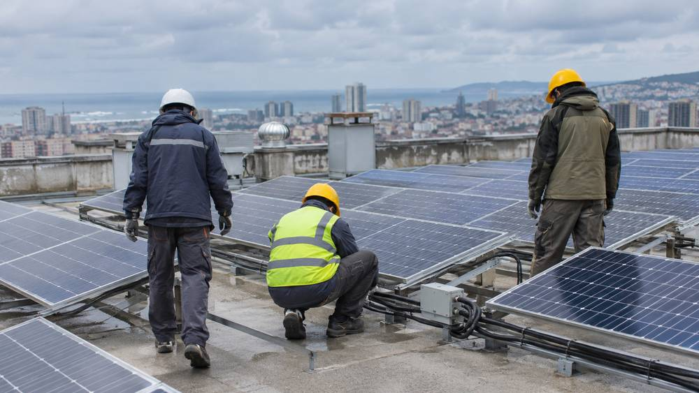

보령 발전노동자 협동조합, 충남 예비사회적기업 됐다

석탄화력 폐쇄에 맞서 발전 비정규직 노동자들이 8월 세운 재생에너지 협동조합이다. 충남도가 17개사를 지정했고, 3년 동안 기금 신청과 우선 구매 지원을 받는다.
충남 보령의 발전노동자재생에너지협동조합이 충청남도 예비 사회적 기업으로 지정됐다. 충남도는 제2차 충남 예비 사회적 기업 지정 심사위원회를 열어 이 조합을 포함한 17개사를 최종 지정했다고 11월 23일 밝혔다. 조합은 석탄화력발전소 폐쇄에 대응해 발전 비정규직 노동자들이 올해 8월 세웠다. 「석탄화력발전소 노동자 및 폐지지역 지원 특별법」은 9월 15일 공포돼 2027년 9월 16일 시행된다.
조합은 태양광 발전소 시공·운영, 재생에너지 설비 유지·보수, 전문 인력 양성으로 수익을 낸다. 이 수익은 노동자 직무 전환 교육과 일자리 만들기에 다시 쓰겠다는 목표다. 9월에는 보령 지역 공공기관의 재생에너지 유지·보수 시범사업 용역을 따내 수행하고 있다. 고용한 노동자는 아직 없지만 2027년 6명, 2028년 12명, 2029년 25명으로 늘릴 계획이다.
예비 사회적 기업은 인증의 최소 법적 요건은 갖췄지만 수익 구조 같은 일부 요건이 모자란 기업이다(요건을 채우면 사회적 기업으로 인증받음). 지정 기업은 3년 동안 충남 사회적 경제 기금을 신청할 수 있고, 청양의 충남 사회적경제혁신타운 입주 지원도 받는다. 공공기관 우선 구매 대상에 오르며 육성 컨설팅과 유통·판로 지원도 받는다.
이번 지정에는 8월 설립 뒤 홍성읍 오관리 빈집을 고쳐 10월 17일 농촌 민박 '온기로스테이' 1호점을 연 홍성 온기로도 들었다. 밤 껍질(율피)로 식물성 인조가죽을 만드는 공주 베일리도 함께 지정됐다. 베일리는 7월 설립 뒤 노동자 1명을 채용했고, 밤 껍질 인조가죽 제조 방법 특허 출원과 아마존을 통한 해외 판로 개척을 추진하고 있다.
시민에너지 관점
석탄화력발전소가 문을 닫으면 일자리를 가장 먼저 잃는 쪽은 비정규직 노동자다. 그 노동자들이 직접 협동조합을 꾸려 재생에너지 시공과 유지·보수로 옮겨 가겠다고 나선 것은 정의로운 전환이 말이 아닌 사업이 될 수 있음을 보여 준다. 2029년 25명 고용 계획이 이뤄지려면 9월에 따낸 공공기관 시범 용역이 한 번으로 끝나지 않아야 한다. 충남도와 보령시는 공공 태양광 유지·보수 일을 지역 노동자 협동조합에 꾸준히 맡기는 길을 열자.
출처: 충청남도 2026-11-23 도정뉴스 「발전노동자, 조합 꾸려 '일자리 전환' 도전」(사회연대경제국 사회연대경제육성과) 원문 보기
출처: 법제처 국가법령정보센터 2026-09-15 「석탄화력발전소 노동자 및 폐지지역 지원 특별법」(법률 제21942호, 2027. 9. 16. 시행) 원문 보기